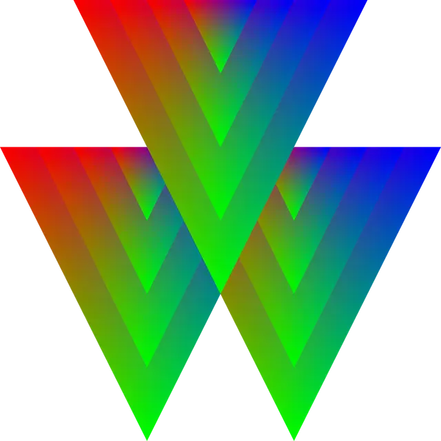
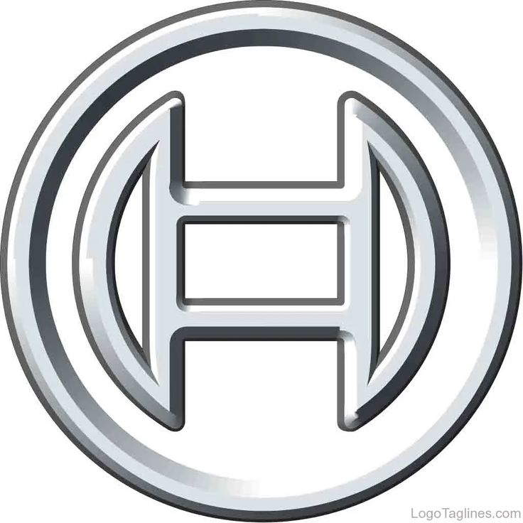
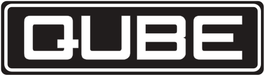

VectorWare
Stealth-ish startup Working on GPU-native system stack around the Rust programming model

Stealth-ish startup Working on GPU-native system stack around the Rust programming model




Machine Learning
Andrew NgCoursera
Android App Development
CMS IT Services